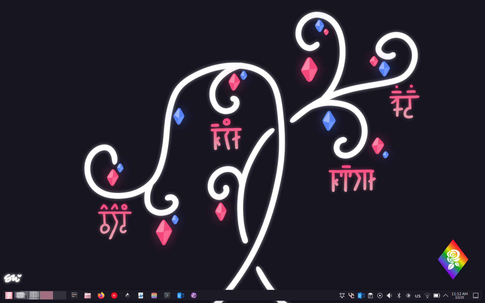
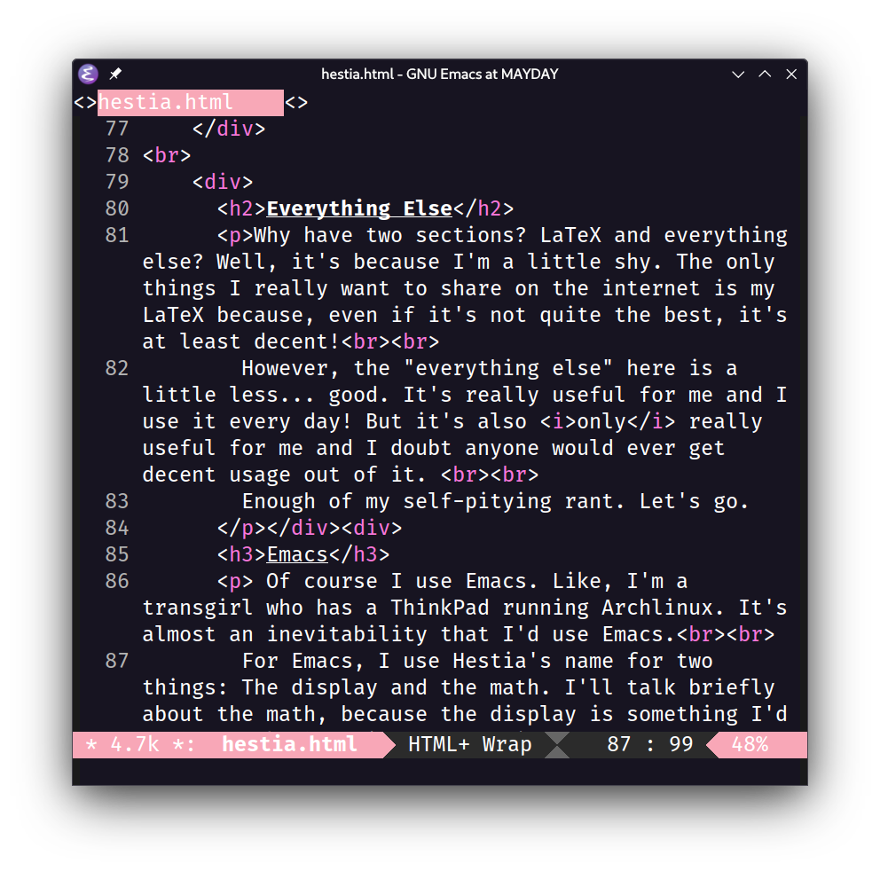
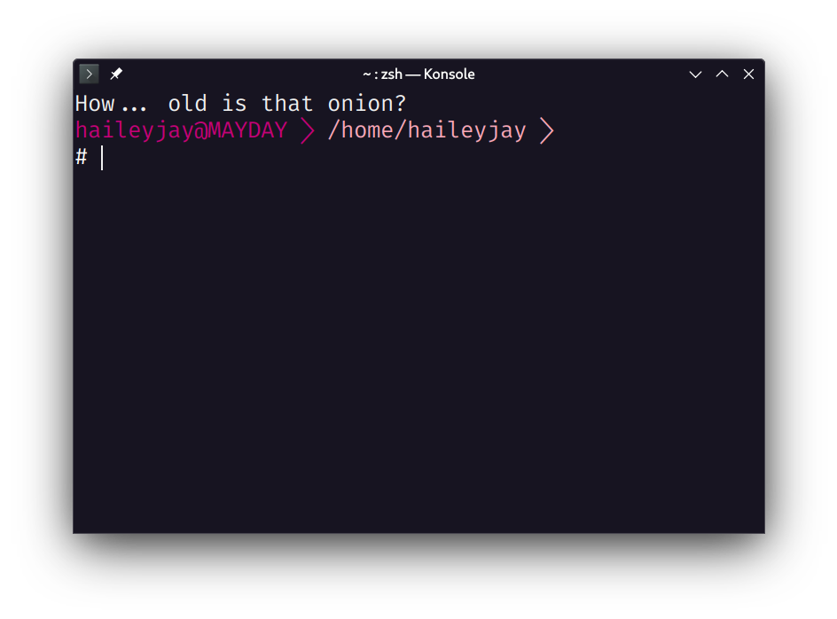

Alright, so out of everything, this probably will take the most explaining. On my own personal computer and server, I have a file/project management system I call Peridot. She's a cobbled together, screwed up, messy little beauty and I'm happy with her.
However, she works with files and I work more often with math. So whenever I was designing LaTeX packages and math-related customizations, I picked a new name: Hestia!
I use Hestia as a name for a bunch of things, mostly my Emacs customizations, visual customizations, and math files. I'll try to give a decent breakdown here.
I use Hestia to personify a lot of aspects about how I interact with my computer. Imagine that I think of Hestia as a typesetting artist who loves things looking nice and neat, and you'll be pretty close.
Why have two sections? LaTeX and everything else? Well, it's because I'm a little shy. The only things I really want to share on the internet is my LaTeX because, even if it's not quite the best, it's at least decent!
However, the "everything else" here is a little less... good. It's really useful for me and I use it every day! But it's also only really useful for me and I doubt anyone would ever get decent usage out of it.
Enough of my self-pitying rant. Let's go.
Of course I use Emacs. Like, I'm a transgirl who has a ThinkPad running Archlinux. It's almost an inevitability that I'd use Emacs.
For Emacs, I use Hestia's name for two things: The display and the math. I'll talk briefly about the math, because the display is something I'd rather talk about in the... "Display" section.
Loading Emacs loads 'hestia.el'. It's not quite an AucTeX replacement, more of an augmentation, but it alleviates a bunch of my biggest annoyances with it.
Firstly: I come from TeXStudio. It was my first LaTeX editor and I loved it. Unfortunately, I outgrew it! I wanted something more customizable and I switched to Kate and eventually Emacs. A couple of the keybinds and functionalities from that, I took with me and now I find it much faster to delimit math both in $inline mode$ and \[display mode\].
I also bound a lot of 'C-c' keys to environments. 'C-c n' gives 'enumerate', 'C-c p' gives proof, 'C-c e' gives a generic environment substitute for AucTeX's 'C-c C-e', etc.
The last really cool customization is the shell command popouts. 'C-x C-r' runs my compiler with my custom settings, set in the options (I use LuaLaTex mostly) and refreshes the log file if it's open. I need it open more often than you'd think. I mess up a lot!
There's a bunch of other little things---'x-space' ensures that I don't accidentally put math too close to text---but I think that's the gist.
Unsurprisingly, I have some particularities when it comes to theming my applications and computers! All of these fall under the umbrella of Hestia.
I have a few things I'd like to show! First, Mayday. Mayday is my laptop and newest addition to my family.

Mayday!
Mayday's background was done by the incredibly talented Dictator Doggo, and features a tree with plort-like fruit and the names of most of my computers using a script for a conlang I did once. "Mayday" is the name in the upper right!
There's also some basic application things that'd be fun to show! I've selected Emacs and Konsole for this purpose.

Emacs and Konsole customizations!
The only comment to make here is that the Konsole window features a splash message across the top. It's from the same splash message list that the homepage of this site pulls from (given that I've done it correctly, not a guarantee)! It has a bunch of things my friends have said and it's a way for me to remember them every time I open a new window. I love my friends and having them so close is pretty enjoyable.